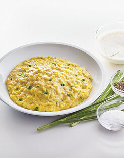

French "Style" Scrambled Eggs!

This is MY take on the French style-ish scrambled eggs, I say my take because
I change it up just a tiny bit for my own personal taste but it's roughly the
exact same! So if you are looking for strictly french scrambled eggs than this
recipe isn't for you. This recipe assumes you know how to make scrambled eggs already.
Ingredients:
- Shredded Cheddar Cheese
Cream Cheese
Butter
- Garlic Powder
- Salt
- Pepper
- Eggs
The Four Easy Steps:
- Crack your eggs into a bowl and give them a good whisk and pour them into a pan on the stove and turn it on to medium heat>
-
Throw in half a tablespoon of butter and start stirring with a spatula and If you notice it starting to cling to the bottom of the pan feel
free to pull it off the heat for a few seconds.
-
Once its lightly scrambled pull it off the heat and throw in a decent chunk of cream cheese, this part is personal preference for how much but I do a nice
chunk my self.
- Stir it in and then place it back on the heat and let it melt into the scrambled eggs
- Take the pan off the heat once the cream cheese is melted in and the eggs look like they are nearing done
- Throw in some shredded cheddar cheese and mix it while it's off the heat
Done!
There you have it! A lot of this recipe is up to personal feeling so feel free to
mix and match with different cheeses or cream cheeses. You can even throw in onions or
other things like hot sauce to really spice it up!
Other Recipes: